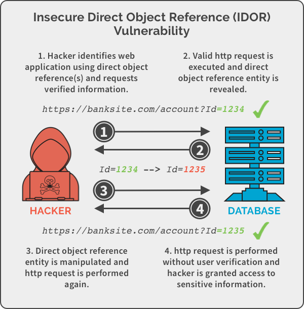
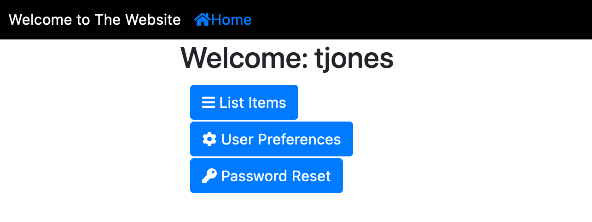

java -jar vulnerable-webapp-1.2.0.jartjones and the default password is newpassword.
https://spanning.com/blog/insecure-direct-object-reference-web-based-application-security-part-6/insecure-direct-object-reference-example/
http://localhost:8080/ you should see a login page.user role.User PreferencesFigure 1. Home Page